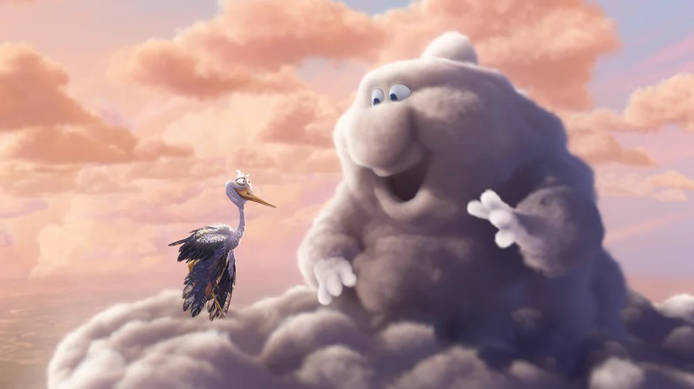
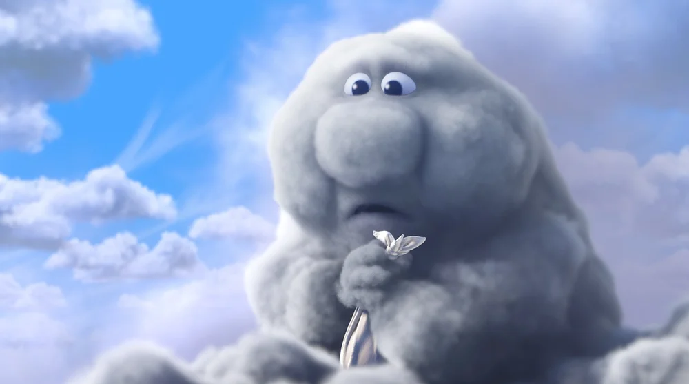
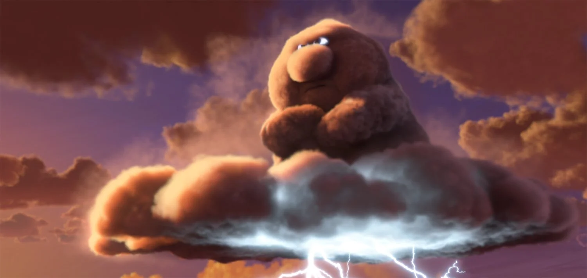
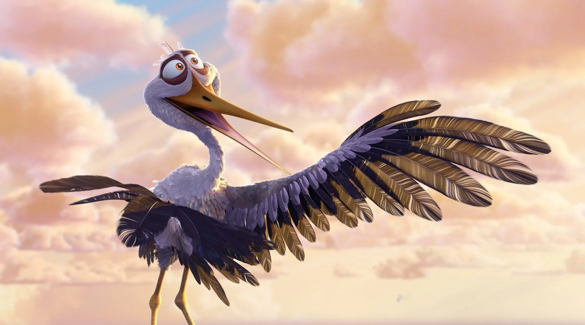

Большое облако. Доброе сердце.
Гас старается изо всех сил. Даже когда его подарки оказываются слишком колючими.
У каждой дружбы своя погода. У этой — целое небо.
Сегодня над мастерской солнечно.

Высоко над землёй облака лепят малышей и оживляют их. Аисты бережно доставляют новорождённых будущим родителям.
Но у серого облака Гаса получаются крокодильчики, ёжики и другие непростые пассажиры. Его напарнику Пеку нужны терпение, находчивость и очень крепкая дружба.
Вся история держится на двух героях, которые понимают друг друга без слов.

Гас старается изо всех сил. Даже когда его подарки оказываются слишком колючими.

Пек не может поменять характер друга. Зато может придумать, как остаться рядом.
Небольшая игра по мотивам мультфильма. Выбери пассажира и снаряжение, которое поможет в дороге.
Маленький пассажир, большие колючки.
Сначала выбери снаряжение.
Маленький фотоальбом большой дружбы. Нажми на кадр, чтобы рассмотреть его.


Здесь нет длинных диалогов. Всё важное говорят взгляды, жесты и поступки.
Проверь, хорошо ли ты знаешь эту историю.